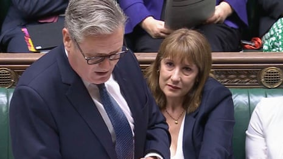

I t was painful to watch. An intrusion into something deeply private. A grief observed. Rachel Reeves breaking down in tears. Her face lined with misery as Keir Starmer failed to guarantee she would still be in her job at the next election. A reminder that politicians are humans too. If you prick us, do we not bleed?
Rachel, a woman alone in the uncaring, public gaze of prime minister’s questions. A mere punchbag for the leader of the opposition. Undefended by Starmer. Keir couldn’t even bring himself to make sure she was OK. Too wrapped up in his own world. Maybe he didn’t even notice. Too busy trying to protect his own reputation.
In the brutal world of Westminster, it’s now every person for themselves. Perhaps it was always that way. Politicians just like to kid themselves otherwise. Only at the end did Reeves’s sister, Ellie, get the chance to comfort her.
It wasn’t meant to be this way. For the past few years, Labour has been the Keir and Rachel show – the rest of the party there to make up the numbers. Keir to be the frontman, Rachel to be the economic brains behind the operation. The woman to reassure the country and the markets that Labour was credible.
Rachel Reeves appears to be emotional as her position is questioned during PMQs – video
In opposition, they were the perfect couple, the antidote to Tory incompetence. Now their joint project is in chaos. On Tuesday night, the Commons was reduced to something like the farce of the Brexit years as last-minute concessions were made. The welfare bill reduced to the status of WINO. Welfare In Name Only. The legislation gutted and £5bn lost in planned government savings. Money that Rachel didn’t have and for which she was being asked to carry the can. Welcome to Labour’s first 2024 election anniversary on Friday. Just the success story they had in mind on election night.
This was never going to be an easy PMQs for Starmer. Or for any of the cabinet, for that matter. Most of them looked as if they had been up for days. Several sleepless, long, dark nights of the soil. Few caught one another’s eyes.
Liz Kendall never made it to the frontbench. She preferred to stay hidden behind the speaker’s chair. Presumably on the advice of her therapist. She had spent enough time getting humiliated the day before. Enough was enough.
Keir himself looked pasty grey. Attempting a grin as the ironic Tory cheers outdid those from his own benches as he took his place at the dispatch box. Trying to normalise things. As if everything that had happened to his government in the past few days was par for the course. And he settled in nicely with a friendly question from Labour’s Paul Waugh. The kind of question that will get you a long way with the whips. Would he agree that Labour had done brilliantly on free school meals? Unsurprisingly, he would.
Over to Kemi Badenoch. Surely even she couldn’t mess this one up. An open goal. All she needed to do was tap the ball over the line. For a while, it looked as if she might not manage even that. But somehow the ball rolled slowly into the net for her first ever win against Starmer. Though Keir could probably thank his lucky stars that he wasn’t facing someone else. Then it could have been an annihilation.
The thing with Kemi is that her manner is so off-putting. That weird sense of superiority when she has so little to be superior about. The arrogance and the condescension. The perpetual sneer. The feeling she is permanently doing the rest of us a favour. All of which makes it hard to like her. Your sympathies are naturally drawn to whoever her opponent happens to be.
Kemi began with a gratuitous swipe at Waugh. Everyone knew he was trying to limit the damage to his party and every MP has been used as toady fodder at some time. The gracious thing to do would have been to ignore it. But Kemi just can’t help herself. She’s never yet passed up the opportunity to kick a man when he’s down. Any backbencher is fair game to her. Then on to the main question. How much money would the welfare bill save?
This prompted a bit of euphoric recall from Keir. Memories of the welfare bill he had wanted it to be. It would be the best bill ever. It was like the day before had never happened. The Tories had broken the system and Labour were mending it. There were millions of people back in work and everyone couldn’t be happier with the way things had gone during the government’s first year.
Now it was Kemi’s turn to indulge her own fantasies. The Tory attacks always look better on paper than they are in reality. Because the Conservatives have got their own record of failure to defend. You can’t go around blaming someone else for not yet fixing what you broke. Except you can if you are Kemi. She must be the only person who thinks the Tories left government having improved the welfare system.
Then we came to the tears. Kemi observed that the chancellor was toast. How long would she be around? This was too much for Rachel. Labour would later try to claim she had something else on her mind but it didn’t look that way at the time. Rachel does care. She has wanted to be chancellor for years. She might yet even turn out to be a good one. Just will she be asked to lay down her life to save Keir’s?
Not everyone in Westminster gets to have a second chance. Not even Kemi. The chances of her still being leader of the opposition come the next election are even worse than Rachel’s.
There was time for one hostile question from his own benches. This from Kim Johnson asking where his much-promised Hillsborough law had got to. Starmer insisted it was on its way. Other Labour MPs chose to keep things constituency related. Desperate not to rock the boat. Wanting to forget WINO. At least for 30 minutes. Keir tried to sound appreciative. Anxious to prove he was a listening man. He could start by hearing Rachel.